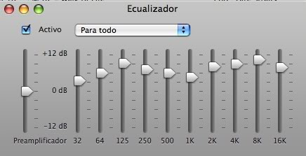
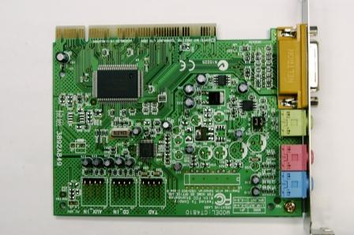
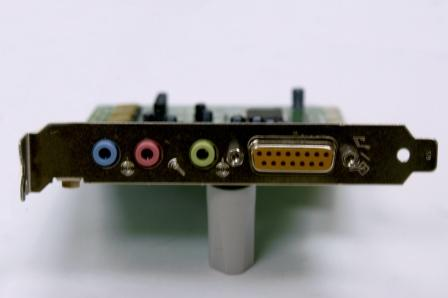
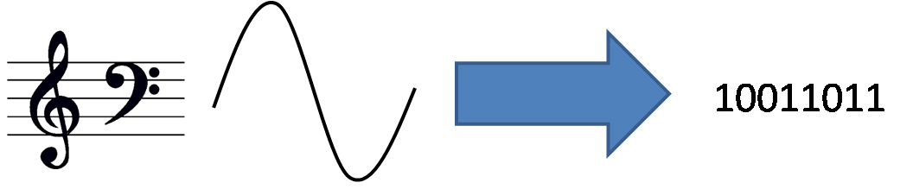

|  |
Términos como MP3 y MP4 son tan comunes que se usan en todo tipo de conversaciones. Pero, ¿sabes a que se refiere cada uno de ellos?.
Tan importante como el uso de imágenes en internet es el uso del vídeo digital, por supuesto, con audio incluido. Los efectos de sonido en los juegos, los videotutoriales y la reproducción de música son elementos fundamentales en internet. |
|
Img 15. Ecualizador digital Imagen de producción propia |
U10 - Información digital y Web
2. Audio
Actividad
Se entiende por audio digital el archivo cuya información, al ejecutarse, emite ondas sonoras. Es decir, los parámetros característicos de las ondas sonoras (frecuencia, amplitud, longitud de onda) se almacenan en forma de bytes (secuencia de ocho bits con valores 1-0).
La captación y reproducción de sonido en un equipo informático requiere un hardware específico.
El interfaz que lo permite es la tarjeta de sonido, que puede ser una tarjeta de expansión o estar integrada en la placa base. El micrófono y los altavoces son los dispositivos de entrada y salida que se conectarán a esta tarjeta.
|  |
 |
|
|
Img 16. Tarjeta de sonido Banco de imágenes de Isftic |
Img 17. E/S sonido Banco de imágenes de Isftic |
Img 18. Auriculares con micro Banco de imágenes de Isftic |
El controlador o driver es el programa que se encarga de comunicar la tarjeta de sonido con el microprocesador.
El hardware realizará la conversión análogico-digital y el software ajustará los parámetros de ambos formatos.
|  |
|
Img 19. Conversión de audio análogico/digital Imagen de producción propia |
AV - Reflexión
Busca en tu equipo (pc u ordenador portátil) los puertos de conexión de las entradas y salidas de audio.
Después busca los controladores o drivers de audio.
Objetivos
En el ejercicio anterior seguro que te has encontrado con una nueva palabra: códecs.
Investiga qué son y cuál es su función.